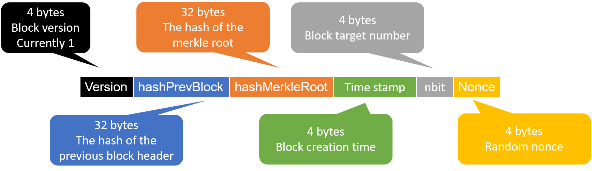
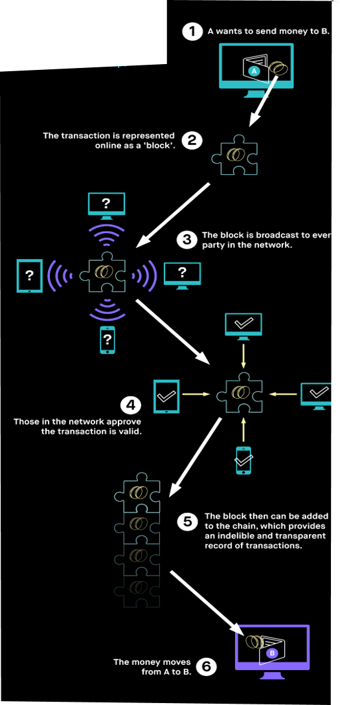
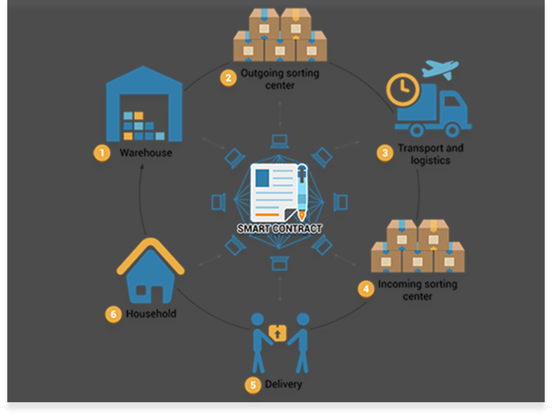

What is Blockchain?
Blockchain is a continuously growing list of records, called blocks, which are linked and secured using cryptographic protocols.The blockchain contains all the transactions ever held, and new blocks are added to the blockchain in a linear, chronological order.
Each computer connected to the blockchain gets a copy of the blockchain which gets downloaded automatically upon joining the net.
The blockchain has complete information about the transactions right from the genesis block to the most recently completed block.
Each block contains:
1.The Block versionA block contains:
2.cryptographic hash of the previous block
2.timestamp
3.transactions data (hash of the merkle root)
4.nonce - A 4 byte random number that is generated to ensure that the content of the block wasn't changed
The following is an image of a simplified block:

Blockchain is an open, distributed ledger that can record transactions between two parties efficiently and in a verifiable and permanent way. For use as a distributed ledger, a blockchain is typically managed by a peer-to-peer network collectively adhering to a protocol for inter-node communication and validating new blocks. Once recorded, the data in any given block cannot be altered retroactively without alteration of all subsequent blocks, which requires consensus of the network majority.
The building blocks of each block are transactions,
The key components of a transaction are:
1.the amount of currency we want to send2.The address of the sender
3.The address of the receiver.
All of the transactions are ordered in a data structure called merkel tree (hash tree) which enables efficient and secure verification of the contents of large data structures.
More specifically : every leaf node is labelled with the hash of a data block and every non-leaf node is labelled with the cryptographic hash of the labels of its child nodes
A hash is calculated on the root of the tree and then it's being entered to the block. The engine benith the blockchain technology are the miners. The miners role is to verify that each transaction it wants to enter to its block is valid (balance wise) and to try and calculate a hash function on all the blocks components over and over again until the hash result will be lower then: 0x00000000FFFFFFFFFFFFFFFFFFFFFFFFFFFFFFFFFFFFFFFFFFFFFFFFFFFFFFFF where the only thing that is being changed each hash calculation is the block nonce. (This action is very heavy computationaly wise and consumes lots of resources) For this, The miners receive fees from the transaction and a reward if they manage to publish the block. The following is an illustration how blockchain works:

Bitcoin offers one particular application of blockchain technology, a peer to peer electronic cash system that enables online Bitcoin payments. While the Bitcoin blockchain is used to track ownership of digital currency (bitcoins), the Ethereum blockchain focuses on running the programming code of any decentralized application. Smart contract is just a phrase used to describe computer code that can facilitate the exchange of money, content, property, shares, or anything of value. When running on the blockchain a smart contract becomes like a self-operating computer program that automatically executes when specific conditions are met. Because smart contracts run on the blockchain, they run exactly as programmed without any possibility of censorship, downtime, fraud or third party interference.
Here is an illustration of the ethereum smart contract capabillities: 